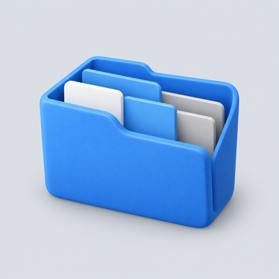

我给自己做、自己在用的几样东西。
都开源在 GitHub 上。能下载的直接给了下载，能试的给了试法；只能在我电脑上跑的，也写明了。
最近一次推送：11 月 5 日 · ai-context-vault作品3
顺手做的小工具给 AI 编程助手用的 Skill
都开源在 GitHub 上。能下载的直接给了下载，能试的给了试法；只能在我电脑上跑的，也写明了。
最近一次推送：11 月 5 日 · ai-context-vault三个主作品，加两个给 AI 编程助手用的小工具。都开源，下面每个都写了怎么用、能不能下载。
从自己存的 ヨルシカ Live 和 MV 里挑画面，裁成电脑或手机壁纸导出。也能让 AI 助手帮忙选片、做头像和粉丝二创。

壁纸工作台，截图来自项目 README
选上面一个请求，看 AI 会打开哪几个文件。

下载预览 5 个文件